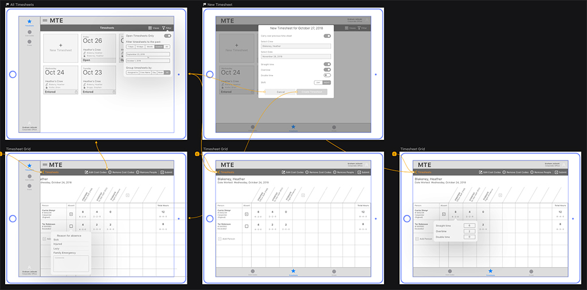
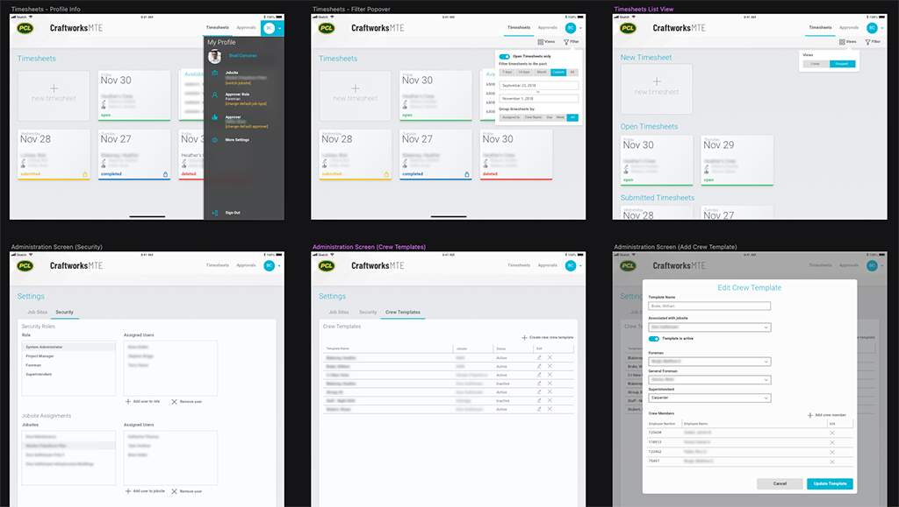
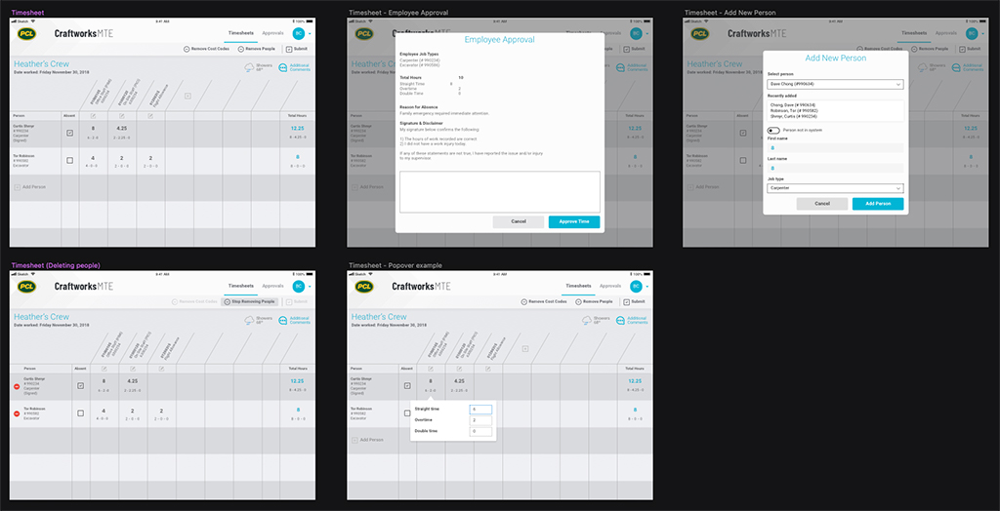
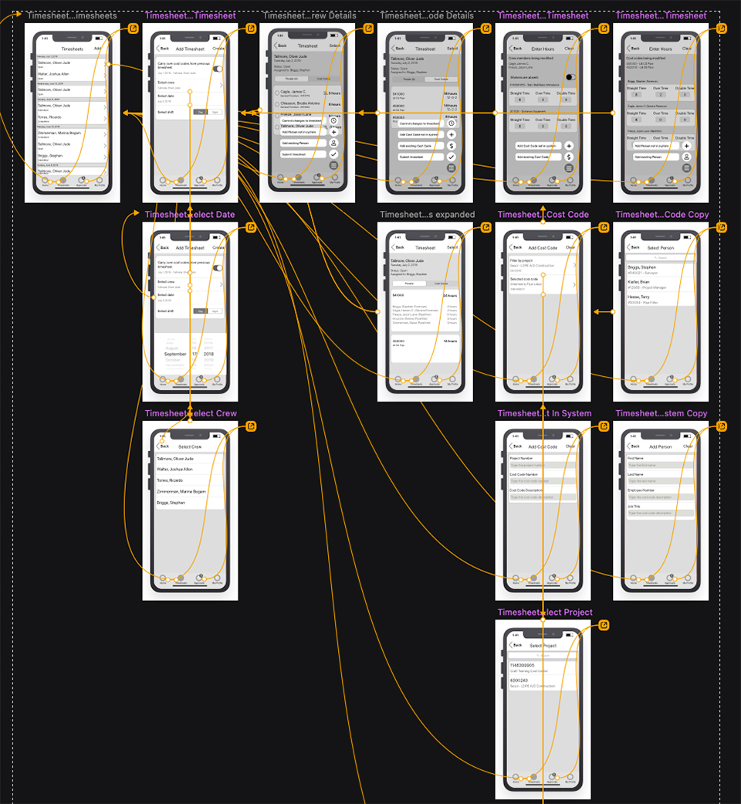
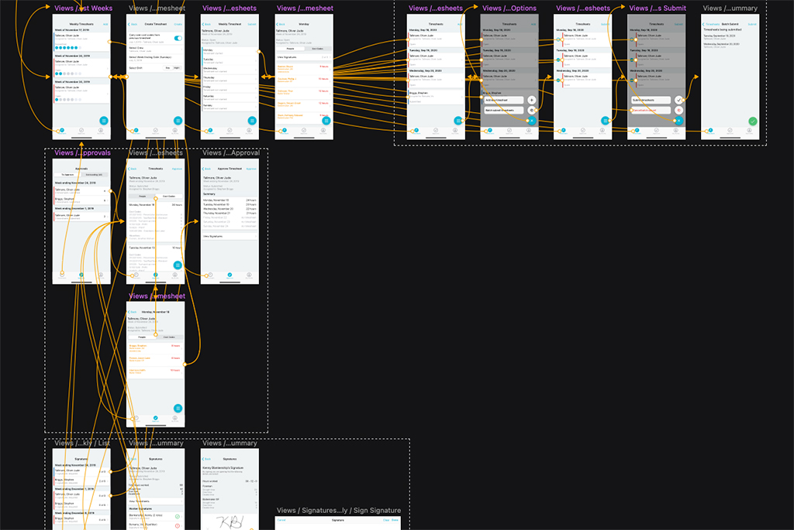

MOBILE TIME ENTRY
This project started in March 2019 and redesign completed in December 2019. This was a two-part project, it required a redesign of the web app and later it was decided that a mobile app was required as well.
I was part of a team of four people at head office working with a team of three people in PCL’s Houston office. My role included user interface design and interaction design.
The Challenge
PCL is a family of companies across numerous districts throughout North America. Each district has its own unique set of challenges, regulations, and processes that require different operating procedures. This leads to districts using different apps for the same task. Time management is one of the biggest culprits for this; not only are there unique procedures for time management across districts, there are unique procedures for staff time management vs. labour (or hourly) time management. PCL wanted to focus on consolidating their hourly time management apps into one.
“PCL wanted to focus on consolidating their hourly time management apps into one.”
Starting Off
A proof-of-concept web application called Mobile Time Entry had been developed in 2018; word spread about this POC and management decided to move forward with it as a full project. Even though it showed promise, people recognized that it lacked features and needed a refreshed user interface.
The Approach
This project proved to be unconventional in many ways. The request to redesign this app came from PCL’s Houston office, who had already sourced an external development team to write the app whilst PCL’s head office would provide business requirements, designs, and architecture. Since they had sourced the dev team, they also wanted final say on design and requirements. I had requested time to conduct some research prior to design but due to time constraints, was unable to. This was a project built strictly off business requirements.
Understanding the Process
Even though proper research was lacking, we did have some insight into the workflow of the people using the application. Time entry is something that a labourer or craft worker does at the end of every day, they’ll complete their shift, return to the jobsite trailer, and enter their hours. Up until this point, it was all being done on paper, and the physical time sheets would be signed off by the superintendent who would then turn them in to the Timekeeper to ensure all hours were being properly tracked.
“…we knew the new UI needed to be fat-finger friendly, easy to navigate, and minimal in complexity.”
The clients wanted the app to be used on iPads and kiosk PCs, so when a labourer finished their shift, they would walk up to the kiosk, login to the system, enter their hours, and submit to the superintendent and timekeeper for approval.
Knowing this, we knew the new UI needed to be fat-finger friendly, easy to navigate, and minimal in complexity.
Starting Off
The first round of designs focused on building a home page that was responsive, and easily accessible from a kiosk. The user had the potential to belong to different work crews and as a result, different time sheets. They would need to easily see their timesheets for each day, the status of the timesheet, and the crew the timesheet belonged to.
We decided to move forward with a tile format. It was responsive, made good use of valuable real estate, and would be easily visible from a distance.
Timesheets
Filling out the timesheet proved to be another challenge. The clients asked that the UI maintain a traditional timesheet format, as if it was on paper, which doesn’t lend itself well to a responsive UI or a touch screen. Several iterations of the timesheet were worked through until the client was satisfied with the design. Several pieces of information were required, including all members on a crew (a foreman could fill out the timesheets for the crew), the cost codes that time was being allocated to, and whether signatures had been gathered or not.
New Districts and Other Apps
Six months into the project, PCL was hearing rumblings about another third-party product called Rhumbix. It was able to provide some features that MTE was unable to at the time, such as a mobile app and weekly timesheets. Up until now, a timesheet needed to be filled out and signed every day; as more districts got wind of MTE, they saw the potential in it but were reluctant to move away from the apps they were using. PCL agreed to build a mobile app and include those missing features in the web app.
Another Round of Design
A mobile app was new for MTE, the paradigms that had been asked for in the web app would simply not work in mobile. A full timesheet view would not fit on an iPhone so a lot of thought had to go in to each screen since the intent was still the same: allow a crew member or foreman to fill out a timesheet for each day or an entire week, and gather the signature from the crew. Now, however, the crew wouldn’t need to return to the site office to gather those signatures, they could be retrieved in the field.
We spent a lot of time analyzing Rhumbix and its feature set, while also analyzing the features required that were PCL specific. We gathered a lot of feedback from subject matter experts (SMEs) in Houston, Hawaii, Toronto, and Edmonton to understand each district’s requirements and what the lowest-common denominator approach could be.
“We gathered a lot of feedback from subject matter experts (SMEs) in Houston, Hawaii, Toronto, and Edmonton to understand each district’s requirements”
Changing Priorities
With ongoing discussions, it became more obvious that the web app was going to serve less as an app for kiosks and tablets, and more as a portal for administrators to manage timesheets in bulk. Having said that, it still needed to server its purpose with a fat-finger user interface.
The workflow began to reveal itself. A foreman would start a timesheet on their phone, they would collect signatures from their crew members, the foreman would submit the timesheet, the superintendent would approve it on their desktop, and the timekeeper would submit it to another system, also from their desktop. The roles of mobile and desktop became more distinct, leading to a better user experience overall.
 Lessons Learned
One of the hardest challenges for myself on this project was working for a client that wanted development to start immediately, and final say on design. This is normal in this industry but they wouldn’t allow me to talk to users; all requests had to go through them and they would vet the answers before sending them back to me. I knew this was improper practice and that aggravated me to no end, but I realized that fighting with the client would lead to zero results, let alone a sub-optimal one.
Sometimes we’re in situations that aren’t ideal, but learning to sit down with the client, figuring out what they’re looking for, and understanding the limitations you’re working within will go a long way to satisfying the client and producing a result that I can be at least somewhat happy with.
Also, keep wireframes low-fidelity. I used an iOS UI kit to generate wireframes but kept everything grey.